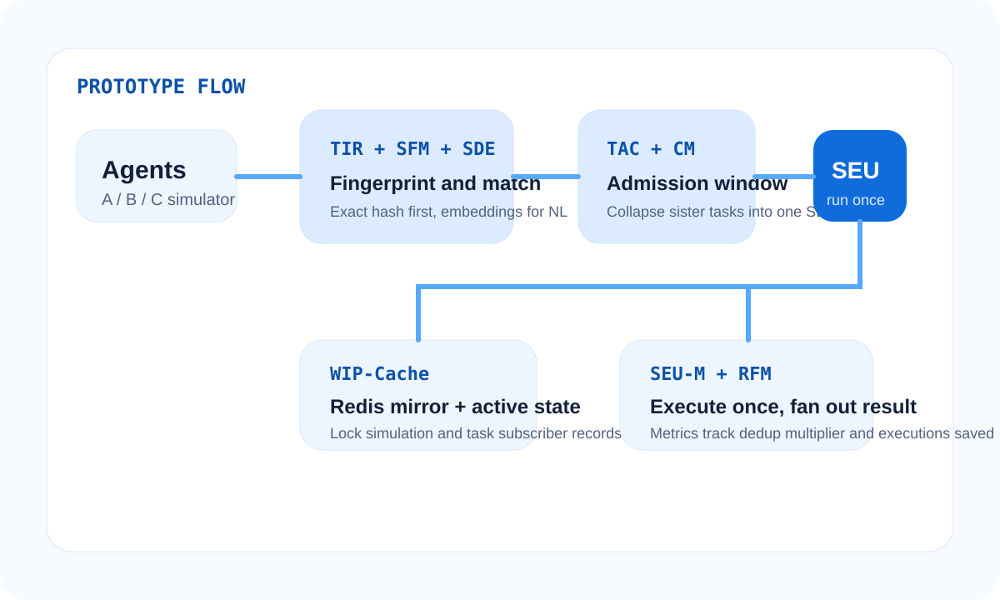

What it demonstrates
Simulated agents, semantic fingerprinting, temporal admission, shared execution units, result fan-out, and deduplication metrics.
Prototype
This page accompanies the public patent microsite and points to the local prototype implementation included in the same repository.
Simulated agents, semantic fingerprinting, temporal admission, shared execution units, result fan-out, and deduplication metrics.
Copy `.env.example` to `.env`, then run `docker compose up --build` inside `prototype/`.
Use the simulator UI to launch the SQL collapse, natural-language collapse, and unique-task scenarios.
The implementation notes, module mapping, and limitations are documented in `prototype/README.md`.
